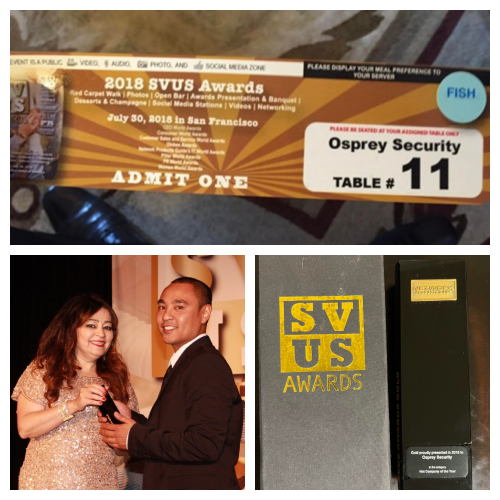

July 2018
What is the SVUS Awards?
SVUS, or Silicon Valley United States Awards, was recently rebranded to Globee Awards. The Globee Awards presents recognition in nine programs and competitions, including Globee® Awards for American Business, Globee® Business Awards, Globee® Awards for Cybersecurity, Globee® Disruptor Awards, Golden Bridge Awards®, Globee® Awards for Information Technology, Globee® Awards for Leadership, Globee® Awards for Sales, Marketing, Service, & Operations, and Globee® Awards for Women In Business.
I had the honor and privilege to attended this event on behalf of my previous company at Osprey Security. The company was recoginized as one of the up and coming cybersecurity startups in the industry and I was selected by our team to accept the award.
